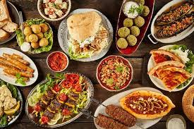
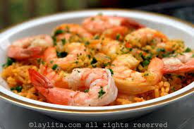
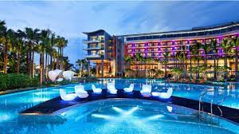

| Gastronomía | Restaurantes |  |
| Sidreías y asadores | ||
| Bodegas de vino y txakoli | ||
| Productos típicos |  | |
| Escuelas de hosteleria | ||
| Cultura | archivos y bibliotecas |  |
| museos | ||
| palacios de congresos | ||
| ferias de muestras | ||
| Ocio | Entretenimiento y diversión | |
| Ocio cultural | ||
| Excursiones y deporte |